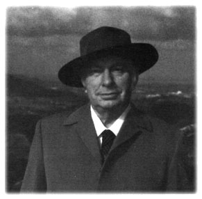

Chapter 15
Visits to Heaven
'Well, I have been to heaven . . . It was complete with gates, angels and plaster saints - and electronic implantation equipment.' (L. Ron Hubbard, HCO Bulletin 11 May 1963)
 (Scientology's account of the years 1963-66.)
(Scientology's account of the years 1963-66.)
The FDA raid on the Church of Scientology on 4 January 1963, was a farce better suited to the Keystone Cops than a federal agency. Two unmarked vans, escorted by motor-cycle police, screeched to a halt outside 1810-12 19th Street, Washington NW, in the middle of the afternoon and as police blockaded both ends of the quiet residential street, FDA agents and US marshals in plain clothes jumped out of the vans and ran into the building. Passers-by might well have assumed they were after terrorists of the most dangerous order. It would then have been something of a surprise when the brave officers began staggering out shortly afterwards with nothing more menacing than piles of books and papers and stacks of boxed E-meters. Such was the haul that two more trucks had to be called in before the afternoon's work was complete, by which time the FDA was able to announce, with an evident sense of triumph, that it had seized more than three tons of literature and equipment.
The feeble justification for these heavy-handed tactics was unveiled when the FDA filed charges accusing the Church of Scientology of having 'false and misleading' labels on its E-meters. As it would have been perfectly feasible to file a similar charge by purchasing a single E-meter from any Scientology office, the raid exposed the Food and Drug Administration to considerable derision and provided the church with a wonderful opportunity to capitalize on its newly martyred status. FDA agents were portrayed as armed thugs bursting into 'confessional and pastoral counselling sessions' and desecrating the sanctity of a church. Scientology press releases described the raid as a 'shocking example of government bureaucracy gone mad' and a 'direct and frightening attack upon the Constitutional rights of freedom of religion'.[1]
On 5 January, L. Ron Hubbard issued a statement from Saint Hill
_______________
1. 'The Findings on the US Food and Drug Agency' [sic], Church of Scientology, 1968
Manor: 'All I can make of this is that the United States Government . . . has launched an attack upon religion and is seizing and burning books of philosophy . . . Where will this end? Complete censorship? A complete ignoring of the First Amendment? Are churches to be attached and books burned as a normal course of action?'
There had been no suggestion that the material carted away by the FDA would be burned, but that did not prevent Hubbard returning to the theme in a second statement the following day, as well as making the connection between the FDA raid and his letter to President Kennedy. He claimed that 'twice in recent years' the White House had asked for a presentation of Scientology and he had thought it only courteous to make the same offer to Kennedy, not realizing that lesser officials were 'imbued with ideas of religious persecution'. He was still hoping for a conference with the president, he said, slyly alluding to recent events by adding that he would expect to be given some guarantee for his 'personal safety'. Hubbard ended on an almost jocular note: 'As all of my books have been seized for burning, it looks as though I will have to get busy and write another book.'
In fact, 1963 was one of the few years in which Hubbard did not produce a single book. Instead, he chose to remain at Saint Hill issuing increasingly bizarre proclamations. On 13 March - his fifty-second birthday - he bestowed a general amnesty on his followers, in the fashion of some middle-eastern potentate: 'Any and all offences of any kind before this date, discovered or undiscovered, are fully and completely forgiven. Directed at Saint Hill, on March the thirteenth, 1963, in the 13th year of Dianetics and Scientology. L. Ron Hubbard.'
The amnesty was followed in May by the foudroyant revelation that Hubbard had twice visited heaven, 43 trillion and 42 trillion years earlier. In a four-page HCO Bulletin - dated 11 May AD 13 (meaning 'After Dianetics') - he claimed the first visit had taken place 43,891,832,611,177 years, 344 days, 10 hours, 20 minutes and 40 seconds from 10.02pm Daylight Greenwich Mean Time 9 May 1963. Nit-pickers might have pointed out that 'Daylight Greenwich Mean Time' was a term unknown in horology and that, in any case, at 10.02pm on a May evening in Britain it would be dark, but this was a trifling matter compared with what was to come.
The first surprise was that heaven was not a floating island in the sky as everyone imagined, but simply a high place in the mountains of an unnamed planet. Visitors first arrived in a 'town' comprising a trolley bus, some building fronts, sidewalks, train tracks, a boarding house, a bistro in a basement and a bank building. Although there seemed to be people around - in the boarding house, for example,
there was a guest and a landlady in a kimono, reading a newspaper - Hubbard quickly discovered they were only effigies and probably radioactive, since 'contact with them hurts'. However, he was able to report he saw 'no devils or satans' [perhaps because he was supposed to be in heaven].
The bank was the key point of interest in the town. It was an old-fashioned corner building of granite-like material with a revolving door. Inside, to the left of the door, was a counter and directly opposite was a flight of marble stairs leading to the Pearly Gates! 'The gates . . . are well done, well built,' Hubbard wrote. 'An avenue of statues of saints leads up to them. The gate pillars are surmounted by marble angels. The entering grounds are very well kept, laid out like Bush Gardens in Pasadena, so often seen in the movies.'
On his second visit to heaven, a trillion years later, Hubbard noticed marked changes: 'The place is shabby. The vegetation is gone. The pillars are scruffy. The saints have vanished. So have the angels. A sign on one side (the left as you "enter") says "this is Heaven". The right has a sign "Hell" with an arrow and inside the grounds one can see the excavations like archeological diggings with raw terraces, that lead to "Hell". Plain wire fencing encloses the place. There is a sentry box beside and outside the right pillar . . .'
Hubbard's visits to heaven would become something of an embarrassment to Scientologists in future years and they would strive to explain that he had intended his description to be allegory, but Hubbard himself attached a note to the bulletin seeming to deny its contents were allegorical.
| The Church of Scientology now apparently refuses to admit the existence of the bulletin; it is no longer included in its otherwise comprehensive lists of Hubbard books and materials, although esoteric material such as 'HCOB 24 Aug - The Marcab Between Lives Implants' is still shown. -- Chris Owen |
In August, Hubbard turned his attention to more temporal issues by re-defining Scientology policy towards the media. Typically, he did not mince words. Almost all Scientology's bad publicity, he asserted, could be blamed on the American Medical Association, which wanted to cause maximum harm to the movement in order to protect its private healing monopoly. 'The reporter who comes to you, all smiles and withholds, wanting a story,' he said, 'has an AMA instigated release in his pocket. He is there to trick you into supporting his preconceived story. The story he will write has already been outlined by a sub-editor from old clippings and AMA releases . . .'
Hubbard's sensitivity towards newspapers was understandable, since Scientology was an easy target and wherever it flourished it was attacked by a universally unsympathetic press. In Australia, the church had suffered a great deal of unfavourable publicity, in
_______________
2. HCO Bulletin, 11 May 1963
particular from a Melbourne newspaper, Truth, which published a series of hostile features about Scientologists being 'brainwashed' and alienated from their families. The media attacks led to questions in the Parliament of Victoria, allegations of blackmail and extortion, and accusations that Scientology was affecting the 'mental well-being' of undergraduates at Melbourne University. In November 1963, the Victoria government appointed a Board of Inquiry into Scientology.
At Saint Hill Manor, Hubbard at first professed himself to be pleased about the Australian inquiry and even hinted that it bad been set up at his instigation. But it soon became evident that the inquiry was basically antagonistic to Scientology and when an invitation arrived from Melbourne for him to appear, he contrived to find compelling reasons to refuse.
In March 1964, the Saturday Evening Post published what would be one of the last full-scale media interviews with L. Ron Hubbard, even though he would be pursued by reporters for the rest of his life. It was an unusually objective feature, although little new was revealed except for Hubbard's claim that he had recently been approached by Fidel Castro to train a corps of Cuban Scientologists. The founder of the Church of Scientology appeared willing to discuss any subject except money. He was, he said, independently wealthy and drew only a token salary of $70 a week, Scientology being a 'labour of love'.
Certainly the Saturday Evening Post reporter was deeply impressed by Hubbard's lifestyle - the Georgian mansion, the butler who served his afternoon Coca-Cola on a silver tray, the chauffeur polishing the new Pontiac and the Jaguar in the garage, and the broad acres of the estate.[3] But while it might have seemed to a visiting journalist that Hubbard had acquired many of the traditional tastes of an English country gentleman, the reality was very different, as Ken Urquhart, a dedicated young Scientologist who worked as the butler at Saint Hill, explained: 'Neither Ron nor Mary Sue lived the way one might have expected in a house like that. They spent most of their time working; there was very little socializing. They would go to bed very late, usually in the small hours of the morning, and get up in the early afternoon.
'Ron used to audit himself with an E-meter as soon as he got out of bed. When he called down to the kitchen I would take him up a cup of hot chocolate and stay with him while he drank it. He used to sit at a table at the end of his four-poster bed chatting about the news or the weather or the latest goings-on at Saint Hill. I remember he used to talk a lot about his childhood. He seemed to want to give the impression that he was rather upper-class; he liked to use French expressions, for example, although his accent was dreadful. He said his mother was a very fine woman. He told me that when she was in
_______________
3. Saturday Evening Post, 21 March 1964
hospital desperately ill he got there just in time to tell her that all she had to do was leave her body and go down to the maternity ward and pick up another one. He didn't say what her reaction was.
'When he went to have a bath I'd extricate myself and rush downstairs to cook breakfast for him and Mary Sue. She had a separate bedroom, but usually had breakfast with him - scrambled eggs, sausages, mushrooms and tomatoes. After breakfast he would go into his office and I would rarely see him again until six-thirty when I had to have the table laid for dinner. At six-twenty-five I would go into his office with a jacket for him to wear to table and after dinner they would spend an hour or so watching television with the children and then he and Mary Sue would return to work in their separate offices.
'I really loved working for Ron; I would have done anything for him. To me he was superhuman, a very unusual, very great person who really wanted to help the world. I was less sure about Mary Sue; I never quite knew where I stood with her. She could be very sweet and loving, but also very cold. The first time I had any contact with her was on the first Sunday I was at Saint Hill. She came into the kitchen where I was preparing dinner and did not say a word to me. I thought that was very strange. She was fiercely protective of her children and I liked them a lot. Arthur had a few problems because he was the youngest and the others wouldn't play with him. Diana was heavily into ballet lessons. They were nice.'
Urquhart was a Scot who had been studying music at Trinity College in London when he was introduced to Dianetics. 'It was as if someone had swept the cobwebs out of my mind,' he said. He was working part-time as a waiter when Ron asked him if he would help out at Saint Hill as a butler. 'I wouldn't have done it for anyone else. I used to cook all the meals, sweep the floors, make the beds, rush around all day long, for £12 a week plus room and board. I was perfectly happy, but things changed quite a bit early in 1965 when "ethics" came in. I was assigned a "condition of emergency" because I served him salmon for dinner that was not quite fresh. I was shocked. You had to go through a whole formula, write it up and submit it with an application to be up-graded.'[4]
'Conditions' were an essential part of the new 'ethics technology' devised by Hubbard in the mid-sixties, effectively as a form of social control. It was his first, tentative step towards the creation of a society within Scientology which would ultimately resemble the totalitarian state envisaged by George Orwell in his novel 1984 . Anyone thought to be disloyal, or slacking, or breaking the rules of Scientology, was reported to an 'ethics officer' and assigned a 'condition' according to the gravity of the offence. Various penalties were attached to each
_______________
4. Interview with Ken Urquhart, Maclean, VA., April 1986
condition. In a 'condition of liability' for example, the offender was required to wear a dirty grey rag tied around his or her left arm. The worst that could happen was to be declared an 'SP' (suppressive person), which was tantamount to excommunication from the church. SPs were defined by Hubbard as 'fair game' to be pursued, sued and harassed at every possible opportunity.
'What happened with the development of ethics,' said Cyril Vosper, who worked on the staff at Saint Hill, 'was that zeal expanded at the expense of tolerance and sanity. My feeling was that Mary Sue devised a lot of the really degrading aspects of ethics. I always had great warmth and admiration for Ron - he was a remarkable individual, a constant source of new information and ideas - but I thought Mary Sue was an exceedingly nasty person. She was a bitch.
'Hubbard had this incredible dynamism, a disarming, magnetic and overwhelming personality. I remember being at Saint Hill one Sunday evening and running into him and as we started to talk people gathered round. People had a wonderful feeling with him of being in the presence of a great man.'[5]
In October 1965, the Australian Board of Inquiry into Scientology published its report. Conducted by Kevin Anderson QC, the inquiry sat for 160 days, heard evidence from 151 witnesses and then savagely condemned every aspect of Scientology. No one needed to progress beyond the first paragraph to guess at what was to follow:
'There are some features of Scientology which are so ludicrous that there may be a tendency to regard Scientology as silly and its practitioners as harmless cranks. To do so would be gravely to misunderstand the tenor of the Board's conclusions. This Report should be read, it is submitted, with these prefatory observations constantly in mind. Scientology is evil; its techniques evil; its practice a serious threat to the community, medically, morally and socially; and its adherents sadly deluded and often mentally ill.'
In many cases, the report continued, mental derangement and a loss of critical faculties resulted from Scientology processing, which tended to produce subservience amounting almost to mental enslavement. Because of fear, delusion and debilitation, the individual often found it extremely difficult, if not impossible, to escape. Furthermore, the potentiality for misuse of confidence was great and the existence of files containing the most intimate secrets and confessions of thousands of individuals was a constant threat to them and a matter of grave concern.
As for L. Ron Hubbard, the report suggested that his sanity was to be 'gravely doubted'. His writing, abounding in self-glorification and grandiosity, replete with histrionics and hysterical, incontinent
_______________
5. Interview with Vosper
outbursts, was the product of a person of unsound mind. His teachings about thetans and past lives were nonsensical; he had a persecution complex; he had a great fear of matters associated with women and a 'prurient and compulsive urge to write in the most disgusting and derogatory way' on such subjects as abortions, intercourse, rape, sadism, perversion and abandonment. His propensity for neologisms was commonplace in the schizophrenic and his compulsion to invent increasingly bizarre theories and experiences was strongly indicative of paranoid schizophrenia with delusions of grandeur. 'Symptoms', the report added, 'common to dictators.'
It continued in similar vein for 173 pages, concluding: 'If there should be detected in this report a note of unrelieved denunciation of Scientology, it is because the evidence has shown its theories to be fantastic and impossible, its principles perverted and ill-founded, and its techniques debased and harmful. Scientology is a delusional belief system, based on fiction and fallacies and propagated by falsehood and deception . . . Its founder, with the merest smattering of knowledge in various sciences, has built upon the scintilla of his learning a crazy and dangerous edifice. The HASI claims to be "the world's largest mental health organization". What it really is however, is the world's largest organization of unqualified persons engaged in the practice of dangerous techniques which masquerade as mental therapy.'[6]
It was not difficult to 'detect' a note of unrelieved denunciation in the Anderson report; indeed, in its intemperate tone, its use of emotive rhetoric and its tendency to exaggerate and distort, it bore a marked similarity to the writings of L. Ron Hubbard. In his determination to undermine Scientology, Anderson completely ignored the fact that thousands of decent, honest, well-meaning people around the world believed themselves to be benefiting from the movement. To condemn the church as 'evil' was to brand its followers as either evil or stupid or both - an undeserved imputation.
Bloodied but unbowed, Hubbard began fighting back against the Anderson report on the day of its publication, beginning with a rebuttal written exclusively for the East Grinstead Courier, accusing the Australian inquiry of being an illegal 'kangaroo court' which had refused to allow him to appear in his own defence. Its findings were 'hysterical', he said, and not based on the facts. He compared the inquiry to the heresy trials which had led to witches being burned at the stake in the dark ages.
However, Dr Hubbard - described as 'the son of a Montana cattle baron' - still found it in his heart to be munificent: 'Well, Australia is young. In 1942, as the senior US naval officer in Northern Australia, by a fluke of fate, I helped save them from the Japanese. For the sake of Scientologists there, I will go on helping them . . . Socrates said,
_______________
6. Anderson, op. cit.
"Philosophy is the greatest of the arts and it ought to be practiced." I intend to keep on writing it and practicing it and helping others as I can.'
For his fellow Scientologists, Hubbard had a slightly different message. What had gone wrong in Australia, he explained, was that he had approved co-operation with an inquiry into all mental health services. ('We could have had a ball and put psychiatry on trial for murder, mercy killing, sterilization, torture and sex practices and could have wiped out psychiatry's good name.') Unfortunately, because of bungling somewhere along the line, the inquiry had been narrowed to Scientology only, 'so it was a mess'.
He laid out the procedure to be followed if there were further official inquiries into Scientology. The first step was to identify the antagonists, next investigate them 'for felonies or worse' and then start feeding 'lurid, blood sex crime actual evidence on the attackers' to the press. 'Don't ever tamely submit to an investigation of us,' he warned. 'Make it rough, rough on attackers all the way.'[7]
Hubbard soon showed he was prepared to take the lead. The storm caused by the Anderson report was not merely restricted to ephemeral headlines: it provoked further and continuing media investigation into Scientology and prodded governments into taking punitive measures against the church. The reaction, sociologist Roy Wallis noted, was comparable to an international moral panic: 'The former conception of the movement as a relatively harmless, if cranky, health and self-improvement cult, was transformed into one which portrayed it as evil, dangerous, a form of hypnosis (with all the overtones of Svengali in the layman's mind), and brainwashing.'[8]
The Australian government was first to act: in December 1965, the State of Victoria passed the Psychological Practices Act which effectively outlawed Scientology and empowered the Attorney General to seize and destroy all Scientology documents and recordings. Then the country playing host to the 'evil Dr Hubbard' could hardly be expected to ignore the Anderson report and on 7 February 1966, Lord Balniel, MP, then chairman of the National Association for Mental Health, stood up in the House of Commons and asked the Minister of Health to initiate an inquiry into Scientology in Britain.
Two days later, Hubbard issued an instruction from Saint Hill Manor: 'Get a detective on that Lord's past to unearth the titbits. They're there.'[9] On 17 February he set up a 'Public Investigation Section' to be staffed by professional private detectives. Its function was to 'help LRH [Hubbard became known in Scientology by his initials] investigate public matters and individuals which seem to impede human liberty' and 'furnish intelligence'. The first private investigator hired to head the section was told to find at least one bad
_______________
7. Enquiry into the Practice & Effects of Scientology, Sir John Foster, 1971
8. The Road To Total Freedom, Roy Wallis, 1976
9. Secretarial Executive Director, Office of LRH, 9 February 1966
mark ('a murder, an assault, or a rape') on every psychiatrist in Britain, starting with Lord Balniel. Unfortunately for Hubbard, the gallant detective promptly scuttled off and sold his story to a Sunday newspaper, creating more unfavourable publicity for Scientology.[10]
Scientology's 'official' reply to the Anderson report was a forty-eight-page document, bound in black and gold, and titled 'Kangaroo Court. An investigation into the conduct of the Board of Inquiry into Scientology.' It was hardly designed to win the hearts and minds of the average Australian. 'Only a society founded by criminals, organized by criminals and devoted to making people criminals, could come to such a conclusion [about Scientology] . . .' the introduction declared. 'The foundation of Victoria consists of the riff-raff of London's slums - robbers, murderers, prostitutes, fences, thieves - the scourings of Newgate and Bedlam . . . the niceties of truth and fairness, of hearing witnesses and weighing evidence, are not for men whose ancestry is lost in the promiscuity of the prison ships of transportation . . .'
After airing the manifold grievances of the church, 'Kangaroo Court' returned to its initial theme: 'The insane attack on Scientology in the State of Victoria, can best be understood if Victoria is seen for what it is - a very primitive community, somewhat barbaric, with a rudimentary knowledge of the physical sciences.' There followed a defiant quote from L. Ron Hubbard: 'The future of Scientology in Australia is bright and shiny. We will continue to grow and progress. No vested interests or blackhearted politicians, no matter how much power they seem to ally themselves with, can stop our thoughts or our communications . . . We will be here teaching and listening when our opponents' names are merely mis-spelled references in a history book of tyranny.'
Despite his apparent confidence, Hubbard recognized that Scientologists needed a boost to their morale in the face of the concerted attacks from the media following the Anderson report. In February 1966, rumours began to circulate among Scientologists that one of their number had at last achieved the fabled state of being 'clear' (Sonya Bianca's performance at The Shrine in Los Angeles having been long forgotten). To become 'clear' was still the goal of every Scientologist, but it was proving an extraordinarily elusive one. New levels of processing were continually introduced at Saint Hill, each with the promise that it would result in 'clearing', only to be replaced by another level and yet more promises.
Among the students completing the Level VII course in February 1966 was John McMaster, a South African in his mid-thirties who worked on the staff at Saint Hill as director of the Hubbard Guidance Center. McMaster had been a medical student in Durban when he
_______________
10. The People, 20 March 1966
first came across Scientology in 1959. He had had part of his stomach removed because of cancer and was in more or less continuous pain until his first auditing session, after which the pain disappeared. Totally converted, he arrived at Saint Hill to take the Briefing Course in 1963 and was subsequently invited by Hubbard to join the staff.
After he had graduated as a Level VII auditor, McMaster was sent to Los Angeles by Hubbard to spread the news of the latest 'technology' being taught at Saint Hill. He had only been there a couple of days when he received a cable: 'Congratulations, world's first clear'. He was ordered to return to Saint Hill immediately for a final check on an E-meter by the 'qualifications secretary'. On 8 March he passed the check without a quiver on the needle of the E-meter, proving that he had completely erased the memory bank of his reactive mind. He was clear!
'It's with greatest joy and happiness,' the qualifications secretary advised Hubbard, 'I have to report to you that John McMaster has passed the Clear check and no doubt exists that he has erased his bank completely . . . Thank you for the honour and privilege of checking out the first Clear.'[11]
The excitement this event caused within Scientology was further heightened when the gratifying word was spread that McMaster possessed all the attributes prophesied by Ron sixteen years earlier in Dianetics, The Modern Science of Mental Health. Indeed, it was said that the world's first clear was actually glowing!
The Auditor, the journal of Scientology, trumpeted the joyous event in its next issue and quoted McMaster: 'It is a great privilege to have been able to follow the stepping stones paved in the wake of Time by such a man as L. Ron Hubbard, for although I have worked for it, I could never have realized it without the great gift he has given, not only to me, but all Mankind.' To celebrate the great occasion, Hubbard proclaimed another 'general amnesty'.
On the same day McMaster was checked out as 'clear', a curious advertisement appeared in the personal column of The Times: 'I, L. Ron Hubbard, of Saint Hill Manor, East Grinstead, Sussex, having reviewed the damage being done in our society with nuclear physics and psychiatry by persons calling themselves "Doctor" do hereby resign in protest my university degree as a Doctor of philosophy (Ph.D.), anticipating an early public outcry against anyone called Doctor; and although not in any way connected with the bombs of "psychiatrics treatment" or treatment of the sick, and interested only and always in philosophy and the total freedom of the human spirit I wish no association of any kind with these persons and do so publicly declare, and request my friends and the public not to refer to me in any way with this title.'
_______________
11. Saxon Hamilton Journal, Summer 1985
Next day, the Daily Mail rather churlishly pointed out that the title Hubbard had publicly renounced was bogus anyway. Mr Hubbard was not available for comment; his personal assistant, Reg Sharpe, told the newspaper that Ron was abroad on holiday and was not to be disturbed.
|
 |
| Hubbard believed he was a reincarnation of Cecil Rhodes and liked to sport the kind of hat worn by the founder of Rhodesia. Fortunately, he did not know Rhodes was homosexual. |
On 7 April 1966, the CIA headquarters in the United States received a cable from an agent in Rhodesia: 'Request traces of L. Ron Hubbard, US citizen recently arrived.' The reply confirmed that Headquarters files contained no derogatory information about the subject, but a memo was attached giving excerpts from press reports. It concluded: 'Individuals who have been connected with the organizations headed by Hubbard or who have had contact with him and the organizations, have indicated that Hubbard is a "crackpot" and of "doubtful mental background".'[12]
The 'crackpot' meanwhile had bought a large four-bedroomed house with a swimming-pool in the exclusive Alexander Park suburb of Salisbury and opened negotiations to acquire the Bumi Hills Hotel on Lake Kariba. His plan was to use the hotel as a luxury base from which to spread the influence of Scientology. He believed the Lake Kariba site would attract well-heeled followers who wanted to be instructed in the highest levels of Scientology and were willing to pay around $10,000 for the privilege.
Nothing of this was revealed to the people of Rhodesia, to whom he represented himself as a 'millionaire-financier' interested in pumping money into the crippled economy of the country and stimulating the tourist industry. In an interview in the Rhodesia Sunday Mail he said he had left his stately home in Britain on doctor's orders after a third attack of pneumonia. 'I am really supposed to be on vacation,' he explained, 'but I have had so many invitations to invest in businesses here and this country is so starved of finance that I have become intrigued.'
Hubbard was careful to distance himself from what the newspaper
_______________
12. CIA files obtained via FOI
called 'the controversial Scientology movement'. It had never really been pushed in Rhodesia, he said, and added: 'I am still an officer of the corporation that administers the movement but it is very largely autonomous now.'[13]
In early May, Hubbard produced, uninvited, a 'tentative constitution' for Rhodesia which he felt would satisfy the demands of the blacks while at the same time maintaining white supremacy. It embodied the principle of one man one vote for a lower house, while real power was vested in an upper house elected by qualified citizens with a good standard of English, knowledge of the constitution and financial standing verified by a bank. Hubbard was apparently convinced that Rhodesia's black population would welcome his ideas, even though it was patently obvious that the qualifications required to cast a vote for the upper house would exclude most blacks.
With his inimitable talent for adopting the appropriate vernacular, Hubbard's proposals were written in suitably constitutional prose, beginning: 'Before God and Man we pledge ourselves, the Government of Rhodesia and each of our officers and men of authority in the Government to this the Constitution of our country . . .'
Copies were despatched to Ian Smith and to Saint Hill Manor in England with instructions to forward the document to the British Prime Minister, Harold Wilson, when Hubbard gave the word. Ian Smith's principal private secretary replied politely to Hubbard on 5 May saying that his suggestions had been passed to a Cabinet sub-committee examining proposals for amending the constitution.
Still as paranoid as ever, Hubbard then wrote to the Minister of Internal Affairs asking if the investigation of his activities and background had been completed and if he could have confirmation that everything was in order. He added a jaunty postscript: 'Why not come over and have a drink and dinner with me one night?'
This provoked a frosty response from the Minister's private secretary: 'My Minister has asked me to thank you for your letter of 5th May 1966 and to say that he has no knowledge of his Ministry carrying out an investigation into your activities. He regrets he is unable to accept your invitation to dinner. Yours faithfully . . .'
Hubbard continued to try and ingratiate himself with the leading political figures in Rhodesia, but with little success. In June, he arranged for John McMaster to visit him from Johannesburg, where he was teaching a clearing course. 'He cabled me and asked me to bring all the clearing course students to Salisbury to take part in a film he wanted to make,' said McMaster. 'I was also to be sure to bring with me two bottles of pink champagne, which was not available in Rhodesia.
'I had no idea why he wanted it but I knew it was important because
_______________
13. Rhodesia Sunday Mail, 22 May 1966
I was met by one of Hubbard's assistants at Salisbury airport and the first thing she said to me was, "Have you brought the champagne?" It turned out he wanted to give it to Mrs Smith as a present in order to try and get in with the Prime Minister. Next morning his chauffeur drove him round to Government House and he swaggered up to the front door with a bottle under each arm thinking he was going to take Mrs Smith by storm. But they wouldn't let him past the front door and he came back very upset, really disgruntled.'[14]
Hubbard's high profile as the 'millionaire-financier' who boasted that he could solve the UDI crisis won him few friends among Rhodesia's deeply conservative white society. He often spoke of his willingness to help the government, pointing out that he had been trained in economics and government at Princeton, and seemed surprised that his services were not welcomed. On television, in newspaper interviews and in all his public pronouncements, Hubbard professed support for Ian Smith's government, although in private he thought Smith was a 'nasty bit of work' who was incapable of leadership.[15] Similarly, he publicly espoused sympathy for the plight of the black majorities in both Rhodesia and South Africa, while privately admitting contempt for them. Blacks were so stupid, he told John McMaster, that they did not give a reading on an E-meter.[16]
At the beginning of July, Hubbard was invited to address the Rotary Club in Bulawayo. He delivered a rambling, hectoring speech telling the assembled businessmen how they should run their country, their businesses and their lives and when it was reported in the local newspaper it appeared to be faintly anti-Rhodesian. A couple of days later, Hubbard received a letter from the Department of Immigration informing him that his application for an extension to his Alien's Temporary Residence Permit had been unsuccessful: 'this means that you will be required to leave Rhodesia on or before the 18th July, 1966.'
Hubbard was stunned. Up until that moment he had believed himself to be not just a prominent personality in Rhodesia, but a popular one. He asked his friends in the Rhodesian Front party to make representations on his behalf to the Prime Minister, but to no avail. 'Smith ranted and raved at them,' he reported later, 'told them I had been deported from Australia, was wanted in every country in the world, that my business associates had been complaining about me and that I must go.'[17] The Rhodesian Government refused to make any comment on the expulsion order, but Hubbard had few doubts about who was behind it - it was obviously a Communist plot to get him out of the country because he was the man most likely to resolve the UDI crisis.
_______________
14. Interview with McMaster, London, March 1986
15. CIA memo, 22 August 1966
16. Interview with McMaster
17. CIA memo
On 15 July, Hubbard lined up his household staff on the lawn in front of his house on John Plagis Avenue and bade them an emotional farewell for the benefit of Rhodesian television, whose cameras were recording the departure of the American millionaire-financier. At the airport there were more reporters waiting to interview him before he left and one of them warned him to expect a posse from Fleet Street to greet him in London. He was quite cheered by the prospect and began to think that his expulsion might actually increase his status as an international personality.
As Hubbard's plane lifted off the tarmac at Salisbury, frenzied preparations were being made in Britain to give him a hero's welcome on his return. The news that the revered founder of Scientology was being kicked out of Rhodesia had initially been greeted with dismay and disbelief at Saint Hill Manor. 'We were shocked,' said Ken Urquhart, 'no one could understand how such a thing could happen. It was an even bigger surprise for the other orgs because none of them knew he was in Rhodesia. It was supposed to be a big secret. I was by then working as LRH Communicator World-Wide and it was my job to code and decode the telexes that were going backwards and forwards and between Saint Hill and Rhodesia. He didn't want anyone to know he was away because he thought everyone would start slacking.'
Coaches were laid on to transport every available Scientologist from East Grinstead to Heathrow on the morning of Saturday, 16 July. They took with them hastily prepared 'Welcome Home' banners but neglected to obtain the necessary permission to wave them; airport police politely insisted they should remain unfurled. Some six hundred Scientologists, including Mary Sue and the children, were gathered in the terminal by the time Hubbard's flight landed. They had to wait while he sorted out a problem about his vaccinations with immigration officers and two hours passed before he emerged from Customs, wearing a lightweight suit and sun-hat, looking tired, but smiling broadly. 'I'm glad to be back,' he shouted as police forced a path through his cheering supporters to a yellow Pontiac convertible parked in front of the terminal. He sat on the back, waving presidential style, as the car was slowly driven away.
No one could have asked for a more enthusiastic welcome, although Hubbard was disappointed that Fleet Street had failed to turn out. Only one reporter was at the airport and he only seemed to want to ask about the events in Australia, to which query Hubbard snapped, 'That's past history.'
Pam and Ray Kemp were among the first visitors to Saint Hill after Hubbard's return from Rhodesia. 'He told me everything that had happened,' said Ray Kemp. 'It seems there was a chief of police who
was very bullying to the blacks and Ian Smith was very wimpish. Smith couldn't make decisions about anything and would rely on the chief of police to tell him what to do. Ron was at dinner one night with Smith and he warned him that if he continued to be wimpish and not put his foot down the probability was that he would be assassinated. About two days later there was an assassination attempt, although I don't remember whether it was on Smith or the chief of police. The bullet went through his mouth and out the side. Ron somehow got the blame because of what he had said. That was why he was asked to leave.'[18]
Ken Urquhart got a slightly different version: 'He inferred the problem was that he knew what to do about the blacks and he became very popular with them. That's why the government kicked him out. I heard him tell Mary Sue that he had lost £200,000 in investment in Rhodesia.'
Back in the familiar surroundings of Saint Hill Manor, Hubbard had plenty of time to review Scientology's current situation and prospects. It was a far from rosy picture. Apart from the problems in Australia and Rhodesia, trouble was also brewing in the United States, where the Internal Revenue Service was challenging the Church of Scientology's tax-exempt status. In Britain there was another rash of hysterical headlines when the police found a girl wandering the streets of East Grinstead in a distressed condition in the early hours of the morning. It transpired she was a schizophrenic who had been institutionalized before being recruited as a Scientologist.
There were further demands in Parliament for an inquiry into Scientology, to which the Minister of Health tartly replied: 'I do not think any further inquiry is necessary to establish that the activities of this organization are potentially harmful. I have no doubt that Scientology is totally valueless in promoting health . . .'
Scientology even seemed to be wearing out its welcome in East Grinstead, where the locals were complaining they were being overwhelmed. As if it was not bad enough having strange Americans walking round the streets wearing badges saying 'Don't speak to me, I'm being processed', Scientologists were snapping up all available rented accommodation, crowding the pubs and straining everyone's patience.
'There was a lot of resentment and alarm in the town,' said Alan Larcombe of the East Grinstead Courier. 'People felt that Scientology could not be allowed to continue expanding. There was a feeling they were trying to take over - an estate agent, dentist, hairdresser, jeweller's, finance company and a couple of doctors were all Scientology run. People didn't like it. They felt that if you had problems you ought to go and have a chat with your vicar.'
Larcombe paid another visit to Saint Hill Manor and was astonished
_______________
18. Interview with Kemp
at the numbers of people who were there. 'It was quite an eye opener. As I pulled up outside the house a bell sounded somewhere and people began pouring out, hundreds and hundreds of them, like wasps leaving a nest. It was an incredible sight. I was completely taken aback by how much the place had grown. I discovered there were so many students there that the sewage system could not cope.'
Hubbard, musing on Scientology's multitude of problems in the autumn of 1966, arrived at a daring and original solution. He kept it a secret, because he loved secrets, although he hinted at what was on his mind in a remark to John McMaster, recently returned from South Africa. 'You know, John,' he said, 'we have got to do something about all this trouble we are having with governments. There's a lot of high-level research still to be done and I want to be able to get on with it without constant interference. Do you realize that 75 per cent of the earth's surface is completely free from the control of any government? That's where we could be free - on the high seas.'[19] McMaster had no idea what he meant and Hubbard did not choose to elaborate.
Soon, senior Scientologists were arriving from the United States to take part in a top-secret project under Ron's personal direction. They could sometimes be seen scrambling in and out of a rubber dinghy on the lake or pouring over navigational charts in a classroom. Some evenings they met behind closed doors in the garage and it was said that they spent their time practising tying knots.
By December it was known they were involved in something called the 'Sea Project'. But still no one could imagine what it was.
_______________
19. Interview with McMaster